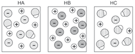

Os mamíferos necessitam de vitamina C para a formação adequada do tecido conjuntivo, como o colágeno. As fibras resistentes dessa proteína mantêm juntos os tecidos da pele, músculos, vasos sanguíneos, tecidos em cicatrização e
outras estruturas corpóreas. [...]
Quando a alimentação humana é deficiente em vitamina C, pode ocorrer a síntese defeituosa do tecido colagenoso e o desenvolvimento da doença conhecida como
escorbuto . Os sintomas do escorbuto incluem: gengivas inchadas e com sangramento fácil, dentes abalados e suscetíveis a quedas, sangramentos subcutâneos e cicatrização lenta.
Por séculos, o escorbuto foi uma doença comum, principalmente entre os navegadores, que não dispunham de frutas cítricas ou verduras frescas em suas viagens. Não era incomum perder grande parte de uma tripulação numa jornada marítima.
Vasco da Gama perdeu mais da metade de seus marinheiros quando contornou o Cabo da Boa Esperança entre 1497 e 1499. Essa trágica ação do escorbuto é descrita pelo escritor português Luiz de Camões em sua obra clássica “Os
Lusíadas”[...].
FIORUCCI, Antonio Rogério; SOARES, Márion Herbert Flora Barbosa; CAVALHEIRO, Éder Tadeu Gomes. “A importância da Vitamina C na Sociedade Através dos Tempos”.
Química Nova na Escola . n. 17, maio 2003. Disponível em: <http://qnesc.sbq.org.br/online/qnesc17/a02.png>>. Acesso em: 3 ago. 2021.
Cite o nome e a aplicação de dois ácidos presentes em seu cotidiano.
O ácido cianídrico pode matar uma pessoa por asfixia rapidamente. Podemos concluir que ele é um ácido muito forte?
Neste capítulo serão abordadas as habilidades
EM13CNT201
e
EM13CNT307
.
Definição
Segundo Arrhenius, ácidos são compostos moleculares que, em solução aquosa, ionizam, gerando como cátion o íon H1 (hidrônio) que gera o íon H3O1 (oxônio). Este é formado quando o íon H1 gerado na
ionização
do ácido analisado se junta à água, por meio de uma ligação covalente coordenada, como podemos observar a seguir.
Utilizando a molécula do cloreto de hidrogênio como exemplo, podemos escrever sua reação de ionização:
A mesma reação pode ser representada utilizando fórmulas eletrônicas. Veja:
As representações anteriores mostram como ocorre o fenômeno da ionização. O cloro é mais eletronegativo que o hidrogênio e atrai o par de elétrons da ligação covalente, originando um caráter parcial positivo (
Δ
1) próximo ao hidrogênio e um caráter parcial negativo (
Δ
–) próximo ao cloro na molécula. Ao entrar em contato com a água, o hidrogênio positivamente carregado da molécula de HC
ℓ
é fortemente atraído pelo oxigênio da água, H2O (mais eletronegativo que o cloro), e uma ligação covalente se estabelece, formando o cátion oxônio, H3O1. O cloro, que adquire carga negativa, forma o ânion cloreto, C
ℓ
–.
O processo de ionização pode ser representado de forma simplificada ou completa; nesta, a água é um reagente presente. Pode-se ainda representar os processos de ionização total ou parcial.
Lembre-se de que cada elemento químico é representado por uma letra maiúscula e, se for necessário, uma segunda letra minúscula, visando evitar duplicidade. Assim, escrevemos Co quando nos referimos ao elemento químico cobalto e CO quando fazemos referência
à molécula de monóxido de carbono, composta dos elementos químicos carbono e oxigênio.
Ionização total
São reações de ionização em que todos os hidrogênios ionizáveis (H1) do ácido são retirados de uma única vez.
Analisando as ionizações, podemos concluir que, na ionização completa, para cada H1 ionizável, teremos uma molécula de água, a fim de juntos formarem o íon oxônio (H3O1).
Ionização parcial
São reações de ionização em que cada hidrogênio ionizável (H1) do ácido é retirado em uma etapa de ionização. A soma das ionizações parciais gerará, como equação global, a equação de ionização total. Para isso, basta cancelar as
espécies que aparecem como produto de uma equação e reagente da outra. Ainda sobre ionizações parciais, a liberação do hidrogênio, na primeira etapa de ionização, é mais fácil de ocorrer do que na segunda, e assim por diante,
pois a cada H1 retirado de um ácido, maior será a força de atração que o átomo central (ou conjunto de átomos) exercerá sobre os hidrogênios que restaram.
Classificação
Ácidos podem ser classificados de acordo com alguns critérios estabelecidos. Vamos estudar cada um deles.
Quanto à presença de oxigênio
Ácidos podem ser classificados de acordo com a presença ou ausência de oxigênio, sendo:
Hidrácidos: ácidos sem o elemento químico oxigênio em sua composição. Exemplos:
HF, HC
ℓ
, HBr, HI, HCN, H2S.
Oxiácidos: ácidos com o elemento químico oxigênio em sua composição. Exemplos: H2SO4, H2CO3, H3PO4, HC
ℓ
O3, HNO3, H3BO3.
Quanto ao número de elementos químicos
O número de elementos químicos distintos presentes na fórmula de um ácido permite classificá-lo em:
Binário: ácidos formados por dois elementos químicos distintos. Exemplos: HBr, HI, H2S.
Ternário: ácidos formados por três elementos químicos distintos. Exemplos: HCN, H2SO4, H3BO3.
Quaternário: ácidos formados por quatro elementos químicos distintos. Exemplos: HOCN, H4[Fe(CN)6], H3[Fe(CN)6].
Quanto ao número de hidrogênios ionizáveis
Hidrogênios ionizáveis são aqueles liberados no processo de ionização de um ácido que, ao entrarem em contato com a água, formam o íon oxônio (H3O1). Para os hidrácidos, todos os hidrogênios são ionizáveis. Para os oxiácidos, existem
algumas exceções: serão ionizáveis apenas os hidrogênios que estiverem ligados aos átomos de oxigênio, e, para visualizar essa ligação, devemos escrever a fórmula estrutural do ácido de interesse.
Para isso, devemos verificar a família à qual o elemento químico central do ácido pertence e, a partir dos conhecimentos de ligação química, verificar quantas e quais ligações são realizadas, conforme apresentado na tabela a seguir.
Ligações covalentes realizadas de acordo com a família do átomo central.
Na sequência, devemos inserir os oxigênios e completar, com hidrogênios, as ligações que faltam para aqueles se estabilizarem. Lembre-se de que os oxigênios que realizam ligação covalente do tipo coordenada não receberão hidrogênio,
uma vez que já possuem o octeto completo.
Vamos analisar alguns exemplos e depois classificá-los. Note que as ligações coordenadas foram representadas por uma seta (representação mais antiga) para facilitar sua visualização:
H2CO3
H2SO4
HC
ℓ
O3
H3PO4
H3PO3
H3PO2
O ácido acético, nosso popular vinagre, é um ácido orgânico fraco conhecido há milhares de anos. Sua fórmula molecular pode ser escrita como C2H4O2, porém ela não indica com detalhes a função orgânica presente, sendo mais comumente
representada por CH3COOH ou, ainda, por meio de sua fórmula estrutural, na qual todas as ligações covalentes estão devidamente representadas ao lado.
Analisando sua fórmula estrutural, podemos notar que apenas um dos quatro hidrogênios presentes na molécula está ligado a um átomo de oxigênio; logo, o ácido é classificado como monoácido, pois contém apenas um hidrogênio ionizável.
Sua reação de ionização pode ser representada por:
CH3COOH
➝
H1 + CH3COO–
Analisando os exemplos, verificamos que as fórmulas estruturais nos itens e) e f) apresentam hidrogênios não ionizáveis. Utilizando esse critério, podemos classificar os ácidos em:
Monoácidos: ácidos com 1 H1. Exemplos: HC
ℓ
, HNO3, H3PO2*.
Diácidos: ácidos com 2 H1. Exemplos: H2S, H2CO3, H3PO3*.
Triácidos: ácidos com 3 H1. Exemplos: H3BO3, H3PO4.
Tetrácidos: ácidos com 4 H1. Exemplos: H4SiO4, H4P2O7.
*exceções
Quanto à volatilidade
Volatilidade é a capacidade que uma substância tem de evaporar. Assim, quanto mais volátil ela for, menor será sua temperatura de ebulição e maior será sua
pressão máxima de vapor
.
Os principais ácidos questionados quanto à volatilidade estão classificados a seguir.
Voláteis: apresentam baixa temperatura de ebulição; hidrácidos, de maneira geral, são voláteis. Exemplos: HF, HC
ℓ
(T.E. = –85 °C), HBr, HI, HCN, H2S (T.E. = –59,6 °C), CH3COOH, HNO3 (T.E. = 86 °C), H2CO3.
Fixos: apresentam alta temperatura de ebulição; oxiácidos, de maneira geral, são fixos. Exemplos: H2SO4 (T.E. = 340 °C), H3PO4 (T.E. = 213 °C), H3BO3 (T.E. = 185 °C).
Quanto à força
A força de um ácido está relacionada à sua capacidade de sofrer ionização. O ácido cianídrico (HCN) é o mais fraco que existe e o mais tóxico.
Assim, podemos quantificar a força de um ácido pela razão entre o número de moléculas que de fato ionizaram e o número de moléculas inicial, gerando como resposta o grau de ionização de um ácido, representado pela letra grega alfa (
a
).
sendo
Como exemplo, vamos imaginar que 100 moléculas do ácido clorídrico (HC
ℓ
) foram dissolvidas em água, das quais 92 sofreram ionização. Encontraríamos um
a 5
92%, classificando esse ácido como forte. Quanto mais próximo o grau de ionização for de 100%, mais forte será o ácido.
No entanto, podemos classificar a força de um ácido de maneira qualitativa, sem calcularmos seu grau de ionização. Para isso, existem algumas regras práticas:
Para hidrácidos
Fortes: HC
ℓ
, HBr, HI.
Moderados ou semifortes: HF.
Fracos: os
demais hidrácidos.
Entre os halogênios que formam hidrácidos, o flúor apresenta o menor raio atômico. Assim, ele forma um ânion menos estável na ionização, diminuindo, portanto, o número de moléculas que se ionizam. O iodo, por sua vez, apresenta
o maior raio atômico. Assim, o ânion formado na ionização é o mais estável e, portanto, o número de moléculas ionizadas é maior.
Para oxiácidos
Devemos classificar qualitativamente um oxiácido quanto à força calculando um número
x , por meio da expressão:
sendo
Analisando alguns ácidos, teremos:
HBrO4 (x = 4 – 1 = 3): muito forte
H2SO4 (x = 4 – 2 = 2): forte
H3PO4 (x = 4 – 3 = 1): moderado
H3PO3 (x = 3 – 2 = 1): moderado
H3PO2 (x = 2 – 1 = 1): moderado
H3BO3 (x = 3 – 3 = 0): fraco
Observe que a regra funciona para os hidrogênios ionizáveis (H1) presentes no ácido, e não para todos os hidrogênios, uma vez que a força de um ácido é medida pelo seu grau de ionização.
A regra é prática, funciona bem, porém há algumas exceções importantes:
H2CO3 (x
=
3 – 2
=
1): moderado, no entanto ele é fraco. Como ele é extremamente instável, em vez de se ionizar, ele se decompõe em água e gás carbônico, de acordo com a equação H2CO3
➝
H2O
+
CO2.
H2SO3 (x
=
3 – 2
=
1): moderado, no entanto ele é fraco. Assim como o H2CO3, ele é extremamente instável; em vez de se ionizar, ele se decompõe em água e dióxido de enxofre, de acordo com a equação H2SO3
➝
H2O
+
SO2.
Nomenclatura
A nomenclatura dos ácidos possui regras bem definidas, que estudaremos a seguir.
Para os hidrácidos
HF: ácido fluor
ídrico
HC
ℓ
: ácido clor
ídrico
HBr: ácido brom
ídrico
HI: ácido iod
ídrico
H2S: ácido sulf
ídrico
HCN: ácido cian
ídrico
Para os oxiácidos
Existe uma nomenclatura para oxiácidos classificados como “padrões” e algumas variações nesses padrões. Vamos analisar os principais casos a seguir.
Padrões
HNO3: ácido nítr
ico
H2CO3: ácido carbôn
ico
H3BO3: ácido bór
ico
HBrO3: ácido brôm
ico
HC
ℓ
O3: ácido clór
ico
HIO3: ácido iód
ico
H2SO4: ácido sulfúr
ico
H3PO4: ácido fosfór
ico
H4SiO4: ácido silíc
ico
Variando o número de oxigênios
Quando retiramos um oxigênio do ácido padrão, mudamos o sufixo -
ico para -
oso ; quando retiramos mais um oxigênio do ácido padrão, acrescentamos o prefixo
hipo- e mantemos o sufixo -
oso . E quando acrescentamos um oxigênio ao ácido padrão, acrescentamos o prefixo
hiper- ao nome do ácido, omitindo, por questão de
eufonia
, o
hi e utilizando apenas
per.
Vamos analisar o ácido clórico e as variações nas fórmulas e nos nomes dos ácidos derivados dele:
HC
ℓ
O4: ácido perclórico
HC
ℓ
O3: ácido clórico
HC
ℓ
O2: ácido cloroso
HC
ℓ
O: ácido hipocloroso
Variando o grau de hidratação
É possível variar o grau de hidratação de um ácido. Assim, para diferenciar o nome do ácido hidratado e do ácido padrão, precisamos fazer alterações na nomenclatura. Utilizaremos alguns prefixos para isso:
O ácido
orto é aquele com maior grau de hidratação. O ácido
meta é o menos hidratado, pois, para obtê-lo, foi retirada uma molécula de água de apenas um ácido hidratado (H3PO4
–
H2O
=
HPO3). O ácido
piro é o intermediário, porque foi retirada uma molécula de água de dois ácidos hidratados, uma vez que o padrão é dobrado nesse caso (2
?
(H3PO4)
–
H2O
=
H4P2O7).
Quando o elemento químico central é um metal ou semimetal
Podemos citar alguns casos especiais de ácidos cujo elemento químico central é um metal ou um semimetal. São eles:
HMnO4: ácido permangânico
H2MnO4: ácido mangânico
H2CrO4: ácido crômico
H2Cr2O7: ácido pirocrômico (chamado comumente de dicrômico)
H3AsO4: ácido arsênico
H4[Fe(CN)6]: ácido ferrocianídrico (íon Fe21)
H3[Fe(CN)6]: ácido ferricianídrico (íon Fe31)
Tioácidos
São ácidos em que substituímos um átomo de oxigênio por um átomo de enxofre, do grego “
theion” . Essa substituição dos elementos químicos não altera em nada a fórmula estrutural do ácido, pois tanto o oxigênio quanto o enxofre são calcogênios, pertencendo, assim, à família VIA da tabela periódica.
Para nomearmos tioácidos, acrescentamos o prefixo
tio . Vamos analisar o ácido sulfúrico:
Aplicações no cotidiano
Os ácidos estudados neste capítulo têm muitas aplicações no cotidiano. A seguir, temos uma relação com algumas delas.
Aplicando conhecimentos
1
Segundo Arrhenius, o que são ácidos?
2
O sulfeto de hidrogênio (H2S) é um composto que não conduz eletricidade. A água pura (H2O) é um composto que também não conduz eletricidade; no entanto, ao dissolvermos o sulfeto de hidrogênio em água, formamos uma solução
que conduz eletricidade. Como podemos explicar esse fato?
3
Escreva a reação de ionização total completa para os seguintes compostos:
HF
HCN
H2CO3
H4P2O7
4
Escreva a reação de ionização por etapa para os seguintes compostos:
H2S
H2SO4
H3BO3
5
Col. Naval-RJ 2016 A chuva ácida é um fenômeno químico resultante do contato entre o vapor de água existente no ar, o dióxido de enxofre e os óxidos de nitrogênio. O enxofre é liberado, principalmente, por veículos
movidos a combustível fóssil; os óxidos de nitrogênio, por fertilizantes. Ambos reagem com o vapor de água, originando, respectivamente, os ácidos sulfuroso, sulfídrico, sulfúrico e nítrico.
Assinale a opção que apresenta respectivamente a fórmula desses ácidos:
H2SO3, H2S, H2SO4, HNO3.
H2SO3, H2SO4, H2S, HNO2.
HSO4, HS, H2SO4, HNO3.
HNO3, H2SO4, H2S, H2SO3.
H2S, H2SO4, H2SO3, HNO3.
Consolidando saberes
1
IFSul-RS 2016 Os ácidos estão muito presentes em nosso cotidiano, podendo ser encontrados até mesmo em nossa alimentação. A tabela abaixo apresenta alguns ácidos e suas aplicações.
A força dos ácidos dispostos na tabela, respectivamente, é:
Forte, forte e moderado.
Moderado, fraco e moderado.
Moderado, fraco e fraco.
Forte, moderado e fraco.
2
IFSul-RS 2016 Leia o texto para responder à questão a seguir.
Os refrigerantes são bebidas consumidas em todo o mundo e vários são os ingredientes utilizados para a sua produção, destacando-se os ácidos, adicionados pela ação acidulante, que está relacionada com o realce do sabor, diminuição
do pH e também regulação do teor de açúcar. Diversos ácidos são utilizados, tais como ácidos naturais (cítrico e tartárico) e o ácido fosfórico – H3PO4, presente em refrigerantes sabor cola.
Em média o pH de refrigerantes do tipo ‘cola’ é de 2,0.
(Fonte: Site Brasil Escola – adaptado.)
Sobre o ácido fosfórico, é correto afirmar que é um:
Oxiácido, Forte, Diácido.
Hidrácido, Fraco, Diácido.
Oxiácido, Semiforte, Triácido.
Hidrácido, Semiforte, Monoácido.
3
A tabela a seguir informa a quantidade em mols dissolvidos e ionizados de alguns ácidos na água, a temperatura constante:
Com base nela, calcule o grau de ionização dos ácidos e coloque-os em ordem crescente de acidez.
4
Uerj 2018 No século XIX, o cientista Svante Arrhenius definiu ácidos como sendo as espécies químicas que, ao se ionizarem em solução aquosa, liberam como cátion apenas o íon H1. Considere as seguintes substâncias, que
apresentam hidrogênio em sua composição: C2H6, H2SO4, NaOH, NH4C
ℓ
.
Dentre elas, aquela classificada como ácido, segundo a definição de Arrhenius, é:
C2H6
H2SO4
NaOH
NH4C
ℓ
5
UFC-CE Os ácidos H2SO4, H3PO4 e HC
ℓ
O4, são de grande importância na indústria (por exemplo, na produção de fertilizantes). Assinale a alternativa que apresenta corretamente a ordem crescente de acidez destas espécies.
H3PO4, H2SO4 e HC
ℓ
O4.
H2SO4, H3PO4 e HC
ℓ
O4.
HC
ℓ
O4, H2SO4 e H3PO4.
HC
ℓ
O4, H3PO4 e H2SO4.
H3PO4, HC
ℓ
O4 e H2SO4.
6
PUC-SP 2017 Um grupo de alunos estava estudando para as provas de vestibular e para isso cada um deles iria explicar uma função inorgânica. O aluno responsável pela explicação sobre ácidos fez as seguintes afirmações:
Reagem com carbonatos liberando gás carbônico.
Formam soluções não condutoras de corrente elétrica.
Não reagem com metais.
São divididos em hidrácidos e oxiácidos.
Estão corretas as afirmações:
I e II.
II e IV.
I e IV.
II e III.
7
UEPG 2019 Com relação às alternativas abaixo, assinale o que for correto.
01.
O HC
ℓ
O4 é o ácido perclórico.
02.
O H3PO3 é o ácido fosfórico.
04.
O H3BO3 é o ácido bórico.
08.
O H2CO3 é o ácido carbônico.
Soma:
8
IFSul-RS 2019
A chuva ácida provoca desastres ambientais como o observado na figura. Os principais ácidos presentes na chuva ácida são o sulfúrico e o nítrico, formados pela associação da água com anidrido sulfuroso (SO2) e óxidos de nitrogênio
(NOx), produtos da queima de combustíveis fósseis, que podem ser carregados pelo vento, ocasionando chuvas ácidas distantes da fonte primária de poluição, o que acaba se tornando um problema sem fronteiras territoriais.
As fórmulas correspondentes aos ácidos citados pelo texto, na respectiva ordem são:
H2SO3 e HNO3
H2SO4 e HNO2
H2SO4 e HNO3
H2SO3 e HNO2
Superação
Fuvest-SP As figuras a seguir representam, de maneira simplificada, as soluções aquosas de três ácidos, HA, HB e HC, de mesmas concentrações. As moléculas de água não estão representadas.

Considerando essas representações, foram feitas as seguintes afirmações sobre os ácidos:
HB é um ácido mais forte do que HA e HC.
Uma solução aquosa de HA deve apresentar maior condutibilidade elétrica do que uma solução aquosa de mesma concentração de HC.
Uma solução aquosa de HC deve apresentar pH maior do que uma solução aquosa de mesma concentração de HB.